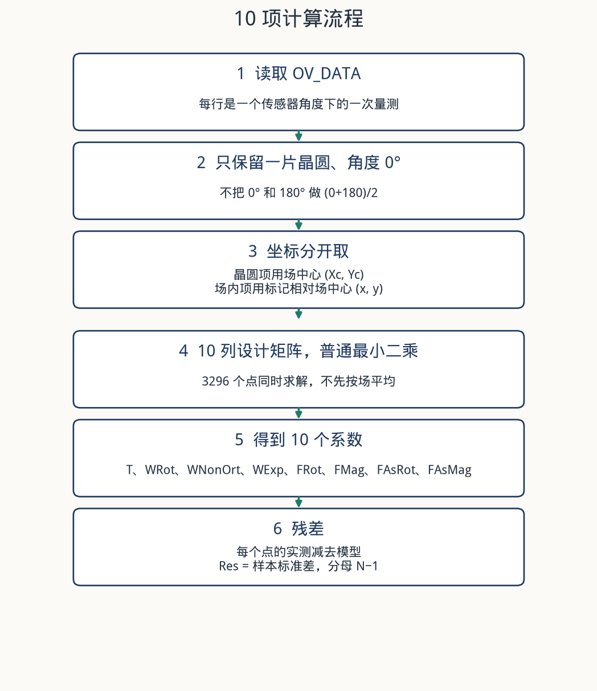
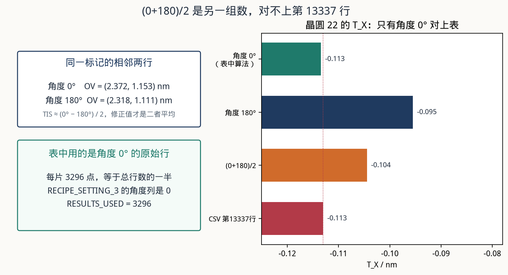
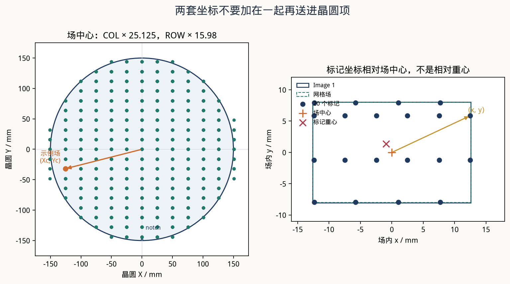
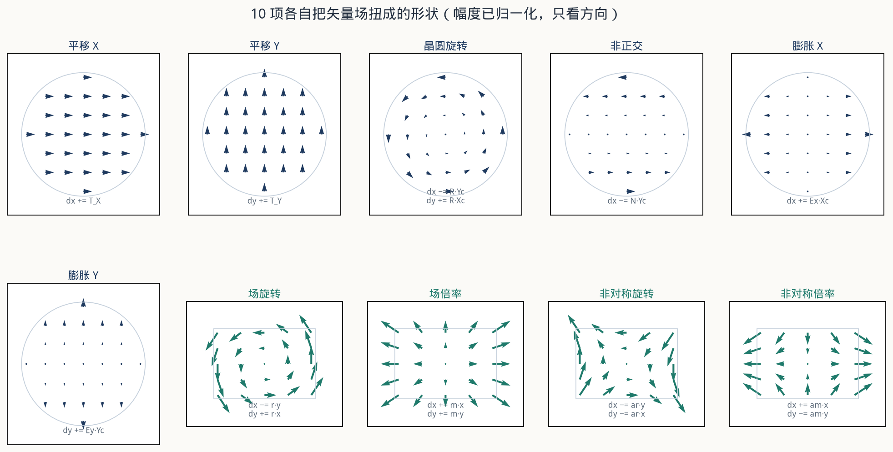
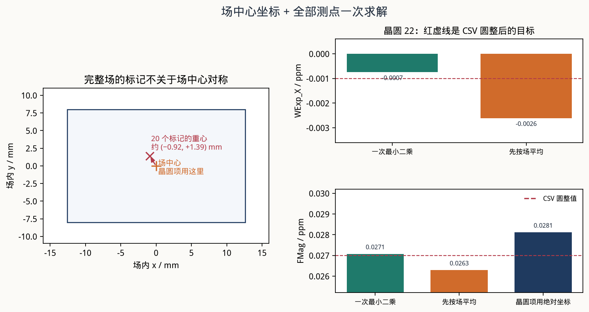
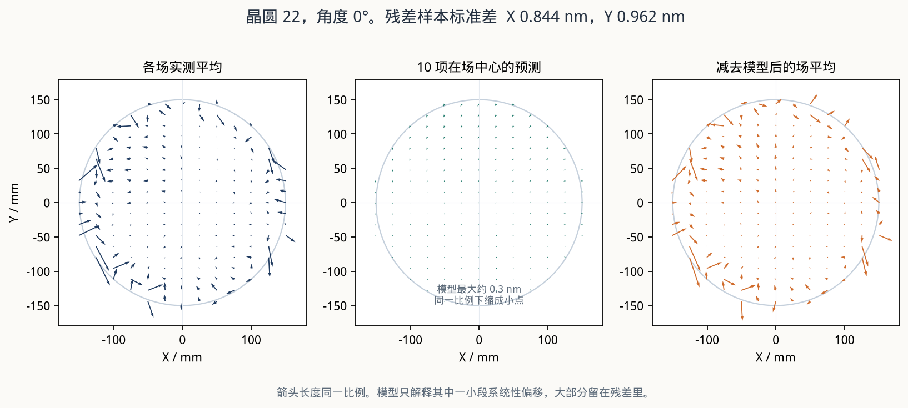

报表上的两行
| 项 | 单位 | 晶圆 22 | 晶圆 23 |
|---|---|---|---|
| T_X | nm | -0.113 | -0.09 |
| T_Y | nm | -0.097 | 0.051 |
| WRot | µrad | 0.001 | 0.001 |
| WNonOrt | µrad | 0 | -0.003 |
| WExp_X | ppm | -0.001 | -0.002 |
| WExp_Y | ppm | -0.001 | 0 |
| FRot | µrad | -0.005 | -0.006 |
| FMag | ppm | 0.027 | 0.01 |
| FAsRot | µrad | -0.032 | -0.028 |
| FAsMag | ppm | 0.01 | 0.018 |
| Res_X | nm | 0.844 | 0.831 |
| Res_Y | nm | 0.962 | 0.882 |
报表会丢掉小数末尾的 0，所以 -0.090 写成 -0.09，0.010 写成 0.01。对照时先保留 3 位小数。

用角度 0° 的原始行
每个物理标记在 OV_DATA 里占相邻两行，传感器角分别是 0° 和 180°。晶圆 22、场 (−6, −3)、标记 (12.4725, 5.856) mm：
两次之差的一半是 TIS，两次的平均才是 TIS 修正后的套刻。文件把两次都原样留下了。同一套最小二乘只换输入时，晶圆 22 的 T_X 如下。
| 输入 | T_X / nm | 和表的关系 |
|---|---|---|
| 角度 0° | -0.113 | 与第 13337 行一致 |
| 角度 180° | -0.095 | 与第 13369 行一致 |
| (0+180)/2 | -0.104 | 对不上第 13337 行 |
| CSV 第 13337 行 | -0.113 | 目标 |

OV_SIGN_CONVENTION = Corrections。拟合直接使用表里的 OV_X、OV_Y，不再取反。系数的正负沿用这个约定。晶圆项用场中心
场中心由场号和网格间距得到。本文件网格偏移为 0。
Xc = COL × 25.125 mm
Yc = ROW × 15.98 mm这就是 FIELDCENTER_X/Y。标记相对场中心的坐标是 TARGETPOS_X/Y，记为 (x, y)。原点在场中心，不是标记重心，也不是场的角点。
标记的晶圆绝对坐标是 (Xc + x, Yc + y)。10 项模型不把这个绝对坐标代进晶圆项。晶圆项只用 (Xc, Yc)，场内项只用 (x, y)。

Image 1 比步进网格略大，个别标记会落在网格矩形外面、图像矩形里面。场中心仍然用网格中心。
10 项公式
坐标用 mm，套刻用 nm。膨胀系数直接是 ppm，旋转和非正交直接是 µrad，因为 1 ppm × 1 mm = 1 nm，1 µrad × 1 mm = 1 nm。不要再乘 1000。
dx = T_X
+ WExp_X · Xc
− (WRot + WNonOrt) · Yc
+ (FMag + FAsMag) · x
− (FRot + FAsRot) · y
dy = T_Y
+ WRot · Xc
+ WExp_Y · Yc
+ (FRot − FAsRot) · x
+ (FMag − FAsMag) · y前 6 项看整片晶圆，后 4 项在每个场里重复同一形状。

| 项 | 单独看时的矢量 |
|---|---|
| T_X, T_Y | 全片同向平移 |
| WRot | 绕晶圆中心逆时针。dx = −R·Yc，dy = R·Xc |
| WNonOrt | 只有 X 分量，大小正比于 Y。X 轴是参考轴 |
| WExp_X, WExp_Y | 沿 X 或沿 Y，位移随坐标拉开 |
| FRot | 每个场内部逆时针转 |
| FMag | 每个场以场中心为心，X 和 Y 同比例放大 |
| FAsRot | 场内两个方向的旋转一正一负，形成剪切 |
| FAsMag | X 放大时 Y 缩小 |
和线性系数的换算
若先把模型写成 dx = … + ax·x + ay·y，dy = … + bx·x + by·y，则
FMag = (ax + by) / 2
FAsMag = (ax − by) / 2
FRot = (bx − ay) / 2
FAsRot = (−ay − bx) / 2这组符号用两片晶圆、0° 和 180° 共四组结果核对过。非对称项的符号如果取反，FMag 还能接近，FAsRot 和 FAsMag 会和表差一倍或变号。
全部测点一次求解
每个测点提供两个方程，未知数就是这 10 个数。普通最小二乘，点与点不加权。有效点全部进入，不先按场求平均，也不先把同一场内位置叠成一张平均场。
设计矩阵每个点占两行，列顺序与表头一致：T_X、T_Y、WRot、WNonOrt、WExp_X、WExp_Y、FRot、FMag、FAsRot、FAsMag。
dx 行 1 0 −Yc −Yc Xc 0 −y x −y x
dy 行 0 1 Xc 0 0 Yc x y −x −y本文件设计矩阵的条件数大约 120，双精度直接求解即可。
晶圆 22、角度 0°：
| 算法 | WExp_X | 圆整 | FMag | 圆整 |
|---|---|---|---|---|
| 一次最小二乘 | -0.00075 | -0.001 | 0.02708 | 0.027 |
| 先按场平均 | -0.00261 | -0.003 | 0.02629 | 0.026 |
| 晶圆项改用测点绝对坐标 | -0.00075 | -0.001 | 0.02812 | 0.028 |
| CSV | -0.001 | 0.027 |

绝对坐标不改变 WExp_X，因为场中心那一列还在。它会把晶圆膨胀在场内的那一段算进 FMag，0.028 ppm 就和表上的 0.027 ppm 分开了。
平移没有单独的场内项。T_X、T_Y 就是联合方程里的常数项，已经包含场内常数。
残差
rx = OV_X − dx
ry = OV_Y − dy
Res_X = sqrt( Σ rx² / (N − 1) )
Res_Y = sqrt( Σ ry² / (N − 1) )分母是 N − 1。晶圆 22 的 X 残差，用 N − 1、用 N、用 N − 10 分别得到 0.843625、0.843497、0.84478。只有第一种圆整成表上的 0.844。
这 10 项只解释一小段系统量。晶圆 22 原始 OV_X 的标准差约 0.93 nm，减去模型后是 0.844 nm。WExp 在晶圆半径上大约 0.15 nm，FMag = 0.027 ppm 在场边缘大约 0.3 nm。残差大，不表示系数算错。

单点例子：晶圆 22，场 (−6, −3)，场中心 (−150.750, −47.940) mm，标记 (12.4725, 5.856) mm，角度 0°。
实测 (2.372, 1.153) nm。模型 (0.706, 0.312) nm。该点残差 (1.666, 0.841) nm。模型是全片一条拟合，不是把每个点都贴到 0。
全批那一行
第 13339 行 ALL_WAFERS 的 10 个系数，等于两片叠在一起再拟合，也等于两片按同一采样顺序逐点平均后再拟合。两片的场和标记坐标完全一样，所以两个系数解相同。
这一行的 Res_X = 0.823、Res_Y = 0.907，是逐点平均之后那 3296 个平均套刻的残差标准差（0.823266 和 0.906526）。两片直接叠在一起的残差标准差是 0.843 和 0.929，那不是表上的数。
单片结果用单片残差。只有做全批这一行时，残差才改用逐点平均后的残差。
核对
晶圆 22 · 第 13337 行
| 项 | 计算值 | 保留 3 位 | CSV |
|---|---|---|---|
| T_X | -0.113419 | -0.113 | -0.113 |
| T_Y | -0.096906 | -0.097 | -0.097 |
| WRot | 0.000571 | 0.001 | 0.001 |
| WNonOrt | -0.000043 | 0 | 0 |
| WExp_X | -0.000748 | -0.001 | -0.001 |
| WExp_Y | -0.001335 | -0.001 | -0.001 |
| FRot | -0.004860 | -0.005 | -0.005 |
| FMag | 0.027075 | 0.027 | 0.027 |
| FAsRot | -0.031574 | -0.032 | -0.032 |
| FAsMag | 0.010460 | 0.010 | 0.01 |
| Res_X | 0.843625 | 0.844 | 0.844 |
| Res_Y | 0.962337 | 0.962 | 0.962 |
晶圆 23 · 第 13338 行
| 项 | 计算值 | 保留 3 位 | CSV |
|---|---|---|---|
| T_X | -0.090275 | -0.090 | -0.09 |
| T_Y | 0.050972 | 0.051 | 0.051 |
| WRot | 0.001278 | 0.001 | 0.001 |
| WNonOrt | -0.003212 | -0.003 | -0.003 |
| WExp_X | -0.001574 | -0.002 | -0.002 |
| WExp_Y | -0.000356 | 0 | 0 |
| FRot | -0.005998 | -0.006 | -0.006 |
| FMag | 0.009538 | 0.010 | 0.01 |
| FAsRot | -0.027933 | -0.028 | -0.028 |
| FAsMag | 0.018088 | 0.018 | 0.018 |
| Res_X | 0.830626 | 0.831 | 0.831 |
| Res_Y | 0.881992 | 0.882 | 0.882 |
同一程序换角度 180°，与第 13369、13370 行一致。两片一起的系数与第 13339 行一致。复核命令是 python3 src/verify_10par.py。
计算步骤
- 读
[OV_DATA]。坐标用 FIELDCENTER 和 TARGETPOS，套刻用 OV_X、OV_Y。 - 留下指定晶圆、传感器角 0°、VALID_X 和 VALID_Y 都为真的行。本文件每片 3296 行。
- 不把 0° 和 180° 平均，不把 (x, y) 加到 (Xc, Yc) 上。
- 按上面的两行设计矩阵，对全部点做普通最小二乘。
- 按 T_X、T_Y、WRot、WNonOrt、WExp_X、WExp_Y、FRot、FMag、FAsRot、FAsMag 输出。
- Res_X、Res_Y 用残差的样本标准差，分母 N − 1。
- 和报表对照时保留 3 位小数。
对应代码是 src/overlay_10par.py 里的 fit_10par() 和 design_matrix()。